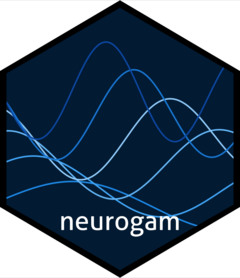

Internal high-level fitting and inference for spatiotemporal EEG
Source:R/testing_through_time_st.R
testing_through_time_spatiotemporal.RdCalled from `testing_through_time()` when `space_id` is supplied.
Usage
testing_through_time_spatiotemporal(
data,
previous_model = NULL,
participant_id = "participant",
outcome_id = "eeg",
outcome_sem = NULL,
time_id = "time",
sensor_id = "channel",
space_id = c("xproj", "yproj"),
predictor_id = NA_character_,
family = stats::gaussian(),
kvalue = c(15L, 10L),
bs = c("ps", "ps"),
tensor_d = c(2L, 1L),
t2_full = FALSE,
multilevel = "summary",
include_ar_term = FALSE,
use_se = TRUE,
varying_smooth = FALSE,
include_by_smooth = TRUE,
participant_clusters = FALSE,
warmup = 1000,
iter = 2000,
chains = 4,
cores = 4,
threads = NULL,
backend = "cmdstanr",
stan_control = NULL,
file = NULL,
n_post_samples = NULL,
threshold = 10,
threshold_type = "both",
odds_mode = c("directional_rope", "legacy_one_sided", "legacy_directional",
"spatiotemporal"),
chance_level = 0,
credible_interval = 0.95,
rope = 0,
contrast_levels = NULL,
sensor_adjacency = NULL,
adjacency_k = 4L,
adjacency_distance_factor = 1.8,
chunk_size = 256L,
re_formula = NA,
...
)Arguments
- data
Input long-format EEG data.
- previous_model
Optional compatible fitted `brmsfit`.
- participant_id, outcome_id, outcome_sem, time_id, sensor_id, space_id,
predictor_id Source column names.
- family
Gaussian likelihood.
- kvalue, bs, tensor_d, t2_full
Tensor product basis specification.
- multilevel
Only `"summary"` is supported.
- include_ar_term
Whether to model AR dependence (unsupported).
- use_se
Whether to model supplied/estimated participant SEM.
- varying_smooth
Must be `FALSE` (shared tensor smooth only).
- include_by_smooth
Whether to include condition-varying smooths.
- participant_clusters
Unsupported for spatiotemporal models.
- warmup, iter, chains, cores, threads, backend, stan_control, file
Fit options.
- n_post_samples
Number of posterior draws, or `NULL` for all.
- threshold, threshold_type, credible_interval
Clustering parameters.
- odds_mode
Posterior-odds inference strategy. The default, `"directional_rope"`, computes independent continuous posterior odds for effects above and below the ROPE. These odds are thresholded separately to identify positive and negative clusters. `"legacy_one_sided"` reproduces the historical capped one-sided odds. `"legacy_directional"` and `"spatiotemporal"` are retained for backward compatibility.
- chance_level
Null value for one-sample inference.
- rope
Symmetric fixed ROPE half-width.
- contrast_levels
Optional A - B ordering for two conditions.
- sensor_adjacency
Optional known electrode graph.
- adjacency_k, adjacency_distance_factor
Automatic graph settings.
- chunk_size
Number of sensor-time locations per prediction chunk.
- re_formula
Population-level predictions default to `NA`.
- ...
Additional arguments to `brms::brm()` when fitting.